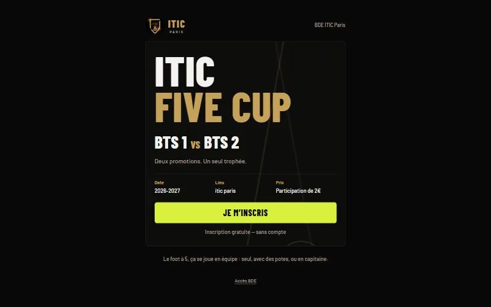

Front-end
 React
React- Vite
- React Router
 JavaScript
JavaScript CSS
CSS
// 2026 · BDE de l'ITIC Paris · application full-stack
Une application web de préinscription au tournoi de foot à 5 qui oppose les promotions BTS 1 et BTS 2, avec un espace d'administration sécurisé pour le BDE.

Le BDE de l'ITIC Paris organise l'ITIC Five Cup, un tournoi de foot à 5 entre deux promotions : BTS 1 et BTS 2. Il lui faut un outil pour recueillir les préinscriptions des joueurs et constituer les équipes.
Un premier prototype existait, mais les données restaient en mémoire, le mot de passe de l'espace BDE était vérifié dans le navigateur et l'export des inscriptions n'était que prévu. Ce projet en fait une application complète : un front React, une API Node.js/Express et une base de données SQL.
Chaque étudiant devait pouvoir s'inscrire de trois façons, sans créer de compte :
Il fallait aussi protéger l'espace d'administration et les données personnelles des joueurs, et garantir qu'une équipe ne dépasse jamais son effectif maximum, même si deux joueurs sont validés au même moment.
client (front React/Vite), server (API Express) et database (scripts SQL), lancés ensemble en développement.event, teams, participants), un script schema.sql pour la structure et un script seed.sql pour des données fictives de test.httpOnly, tentatives de connexion limitées, validation des données côté serveur avec Zod, données personnelles jamais renvoyées par l'API publique et export CSV protégé contre l'injection de formules Excel.
GitHubL'application est en ligne et son code est public sur GitHub. Les étudiants peuvent se préinscrire seuls, entre amis ou en capitaine, et le BDE suit les inscriptions et les équipes depuis son espace d'administration.
Restent à finaliser : le logo officiel et les visuels du tournoi, ainsi que les mentions RGPD et la durée de conservation des données, à valider avec l'école.
Ce projet m'a permis de construire une application complète, du schéma de base de données jusqu'au déploiement, et de mettre en pratique la sécurisation d'un espace d'administration, la validation côté serveur et la gestion des accès simultanés avec des transactions SQL.